Overview
This project aims to display geometrix meshes and manipulate them in several ways.
A way to describe curves is to use Bezier curves. I implemented a method to generate Bezier curves with 1D de Casteljau subdivision from control points.
By using a set of Bezier curves, we can visualize Bezier surfaces. I then implemented a method to generate Bezier surfaces with 2D de Casteljau subdivision.
For a geometric mesh, it can be represented as a combination of many triangles when approximating the surface. I implemented a method to display the surface with smoother shading by using area-weighted vertex normals.
It is also necessary sometimes to manipulate some of the edges, which are the sides of triangle meshes. I then implemented a way to flip edges and another way to split edges.
Sometimes, we want better approximation of the surfaces by adding more triangle meshes. Loop subdivision can be used to split existing triangle meshes into smaller ones and to mathe the surface smoother. I implemented such a method to upsample meshes.
Section I: Bezier Curves and Surfaces
Part 1: Bezier Curves with 1D de Casteljau Subdivision
Briefly explain de Casteljau's algorithm and how you implemented it in order to evaluate Bezier curves.De Casteljau's algorithm is an algorithm to generate Bezier curves. We are first given with several control points, and then we connect them. The algorithm will recursively do linear interpolation on every line segments and connect those split points. After that, the algorithm will do linear interpolations on those new line segments until there is only one point left. When changing the parameter for doing interpolation, the final point will generate a continuous line, and the line will be the Bezier curve we want.
For my implementation, I wrote a function that uses a result list to store the results. The function has a for loop that evaluates the linear interpolation for each two consecutive points. The results are then stored in result list and output.
Take a look at the provided .bzc files and create your own Bezier curve with 6 control points of your choosing. Use this Bezier curve for your screenshots below.
Show screenshots of each step / level of the evaluation from the original control points down to the final evaluated point. Press E to step through. Toggle C to show the completed Bezier curve as well.
|
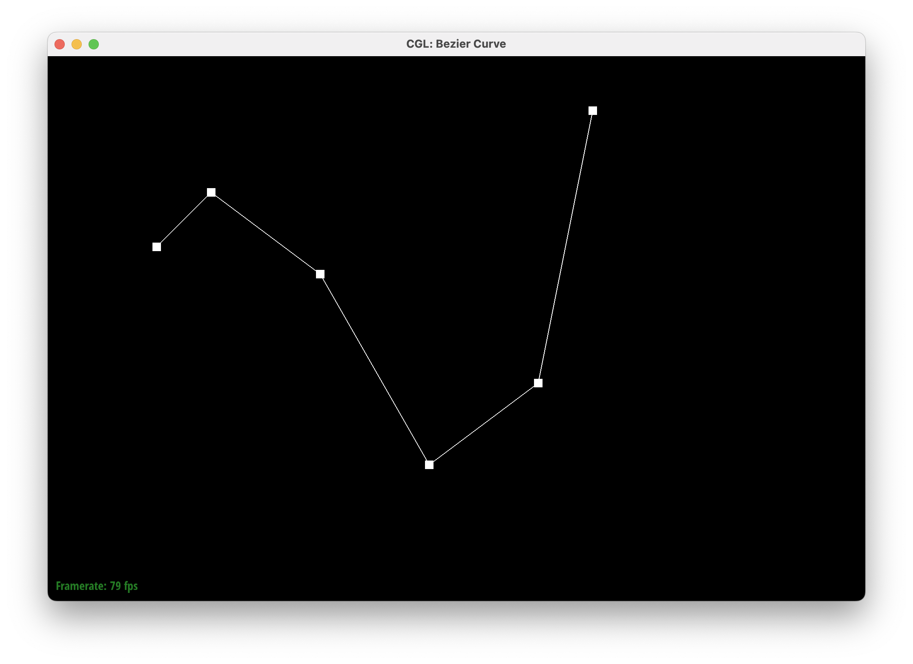
|
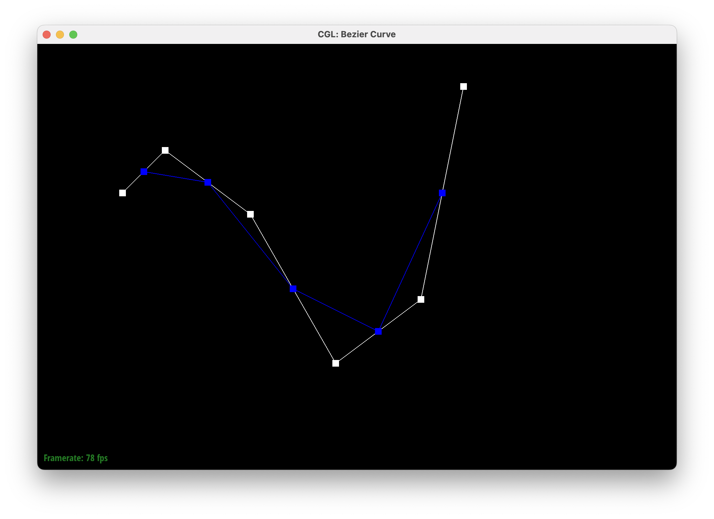
|
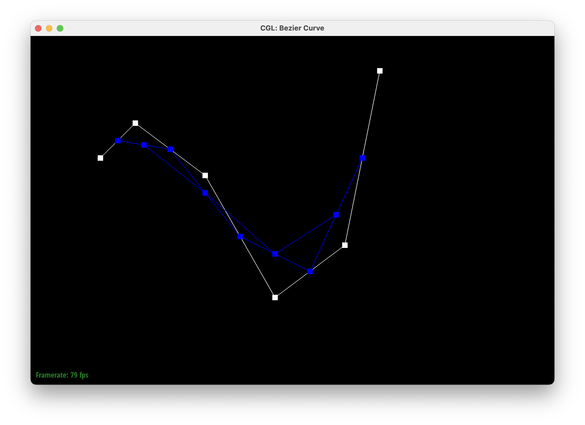
|

|
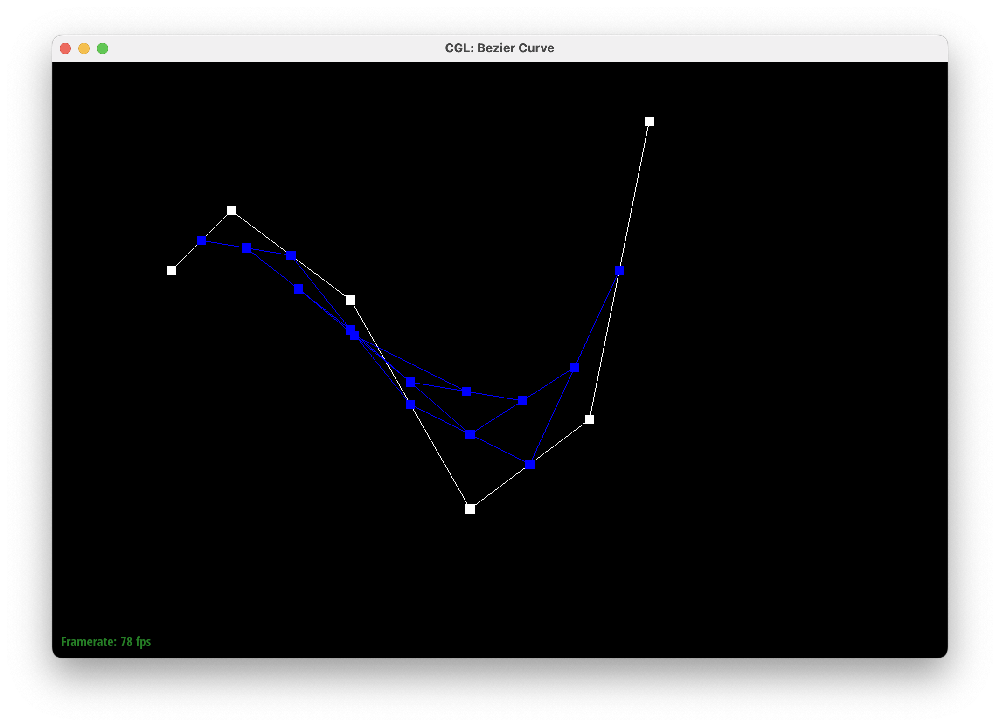
|
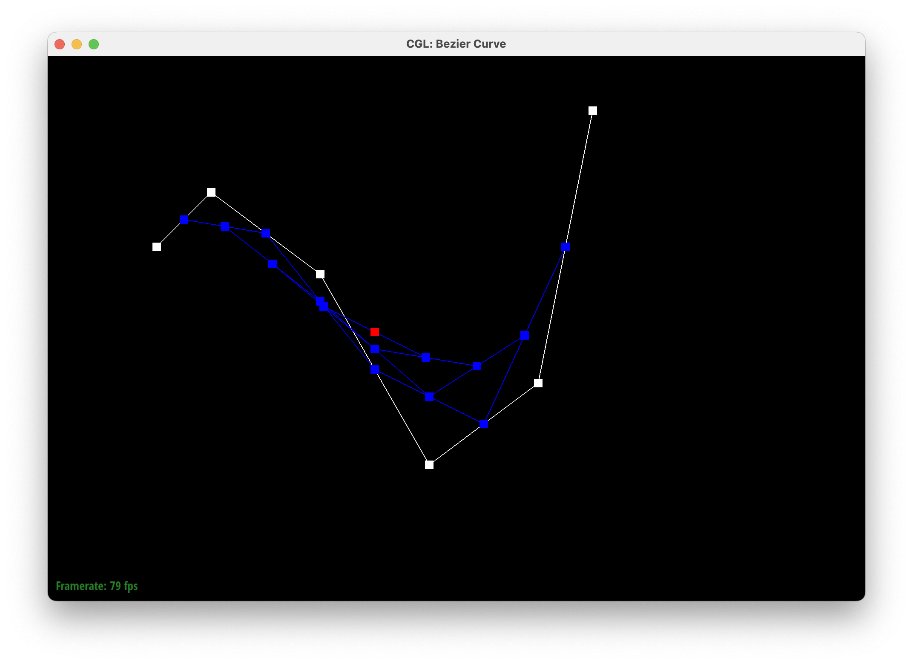
|
|
|
Show a screenshot of a slightly different Bezier curve by moving the original control points around and modifying the parameter \(t\) via mouse scrolling.
|
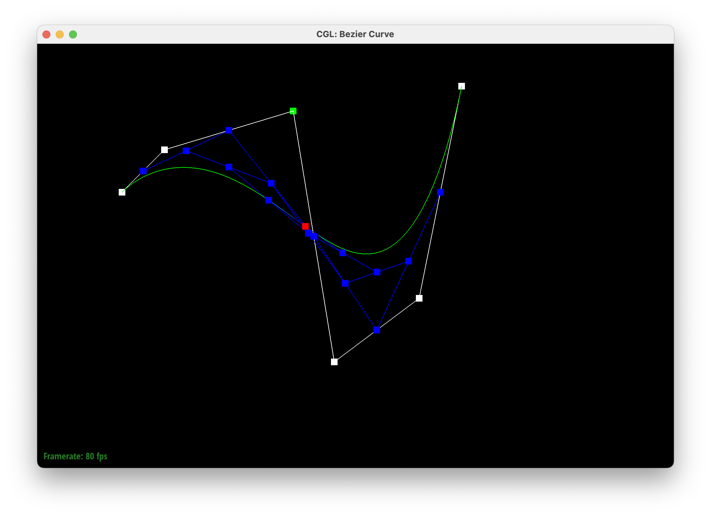
|
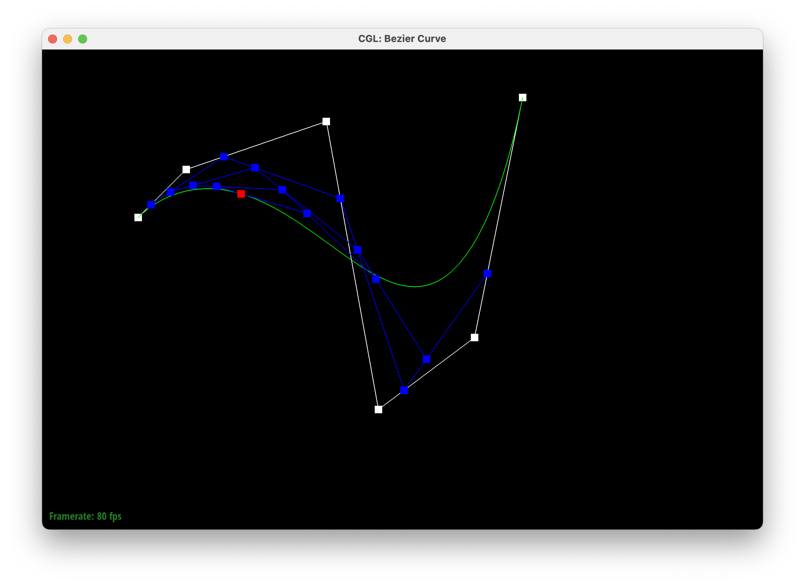
|
Part 2: Bezier Surfaces with Separable 1D de Casteljau
Briefly explain how de Casteljau algorithm extends to Bezier surfaces and how you implemented it in order to evaluate Bezier surfaces.De Casteljau algorithm can be applied to generating not only curves, but also surfaces.
If we consider a grid of points, in this case four by four, and then view them as control points of several Bezier curves, these points can generate Bezier curves. The algorithm first generates Bezier curves on one direction of the grid, and then it also generates curves on the other side to make sure that one control point can be used to generate two Bezier curves.
I first did the same thing as in part one here, except that I change the dimention of coordinates from 2D to 3D. Then, I wrote a recursive function to compute a final result from a list of points and by using the function above recursively. For each recursive step, the function computes the linear interpolation results of the coordinates of two consecutive points. The result is then stored in the result list. If the result list has only one element at last, it means that the process is done and the function terminates. Otherwise, the function uses the result list as input and runs again.
Finally, the function to generate a Bezier surface utilizes the function above by first calculating all final linear interpolation results in one dimention, storing them as a list, and then calculate the linear interpolation result in another dimention to finish calculation. There are two parameters for linear interpolation in two dimentions.
Show a screenshot of bez/teapot.bez (not .dae) evaluated by your implementation.
Section II: Triangle Meshes and Half-Edge Data Structure
Part 3: Area-Weighted Vertex Normals
Briefly explain how you implemented the area-weighted vertex normals.Since surfaces are approximated by triangle meshes, the surface are not smooth and thus the shading looks not continuous. This is because the shading changes abruptly due to the whole object being a polyhedron and has flat surfaces.
Phong shading is a method to evaluate the normal vector, which is being used to calculate shading at each point, at each vertex so that the whole shading effect looks smooth. For each vertex, the normal vector is the average of all normal unit vectors of faces that share the same vertex.
Considering how the algorithm works, I first find all faces that shares the same vertex by starting from the vertex and iteratively find the edges that starts from that vertex. The normal vector of a face can be determined by two non-parallel vectors on that surface, and this can be obtained by two edges that already exist in the mesh. Furthermore, vectors can be calculated by its start position and end position, so I have a list to record all vertex positions that are directly linked to the original vertex by one edge. There will always be one halfedge that links to the vertex, and I start from there. Every haledge has its next halfedge and a twin. In this way, I find the twin of that halfedge and then I find the vertex that is related to the twin, and then record it in a list. To move on to the next neighboring vertex, I find the next halfedge of the twin to make sure that this new halfedge starts from the same original vertex and is related to another face.
After all vertex positions are recorded, I use a for loop to calculate two vectors for each face. Two vectors on edges can be calculated from the position of the vertex in the center and two neighboring vertex positions. I made sure that all normal vectors are pointing outwards by applying the right hand rule of vector cross product. Then, I made sure that every normal vector is also unit vectors and sum them up.
For the final step, I took an average of the sum and then turned it into a unit vector, and that is the desired area-weighted vertec normal vector.
Show screenshots of dae/teapot.dae (not .bez) comparing teapot shading with and without vertex normals. Use Q to toggle default flat shading and Phong shading.
|
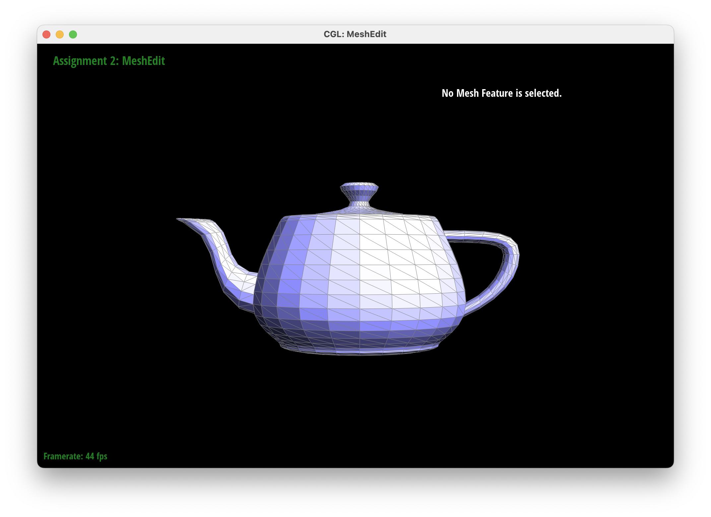
|
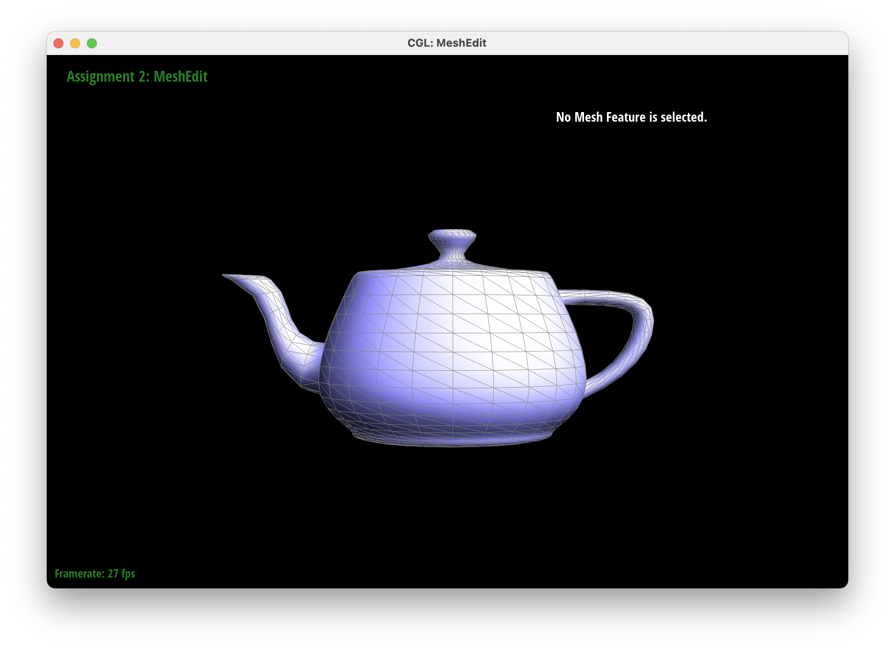
|
Part 4: Edge Flip
Briefly explain how you implemented the edge flip operation and describe any interesting implementation / debugging tricks you have used.Edge flip is used on a edge that is shared by two neighboring faces. When flipping an edge, the edge connects to the other two vertices in the two triangle meshes, creating a new connection method of the same four vertices.
It is important to not add in anything new, so I paid attention to update the relative position of all vertices, halfedges, edges, and faces.
I used the following note to compare all elements before and after the flip.
For my implementation, I first retrieved all needed elements and recorded them by their names. Then, I re-assigned them with the help of my note. For each halfedge, it can be updated by its twin, its next halfedge, its starting vertex, the edge, and the face that lies on its left. It is easy to update all elements in this way as the only thing I need to do is to carefully assign the correct combination to each element.
In total, the recorded elements are: four vertices: v1, v2, v3, v4; five edges (and one of those is the flipped and given one): e0, e3, e4, e5, e6; ten halfedges: h1, h2, h3, h4, h5, h6 are the ones that lies in these four verteces, h3t, h4t, h5t, h6t are twins of h3, h4, h5, h6 because thay will be need when updating the other six half edges.; two faces: f1, f2.
Show screenshots of the teapot before and after some edge flips.|
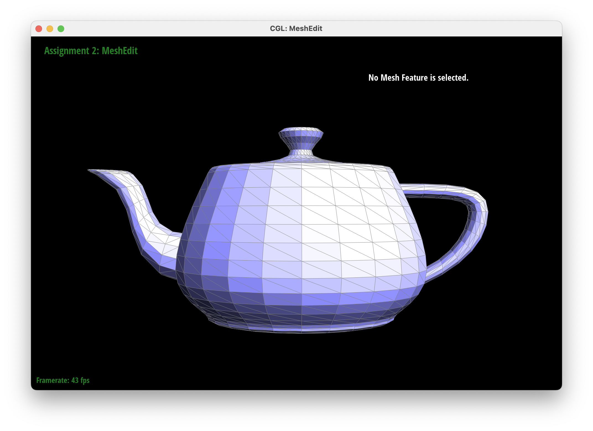
|
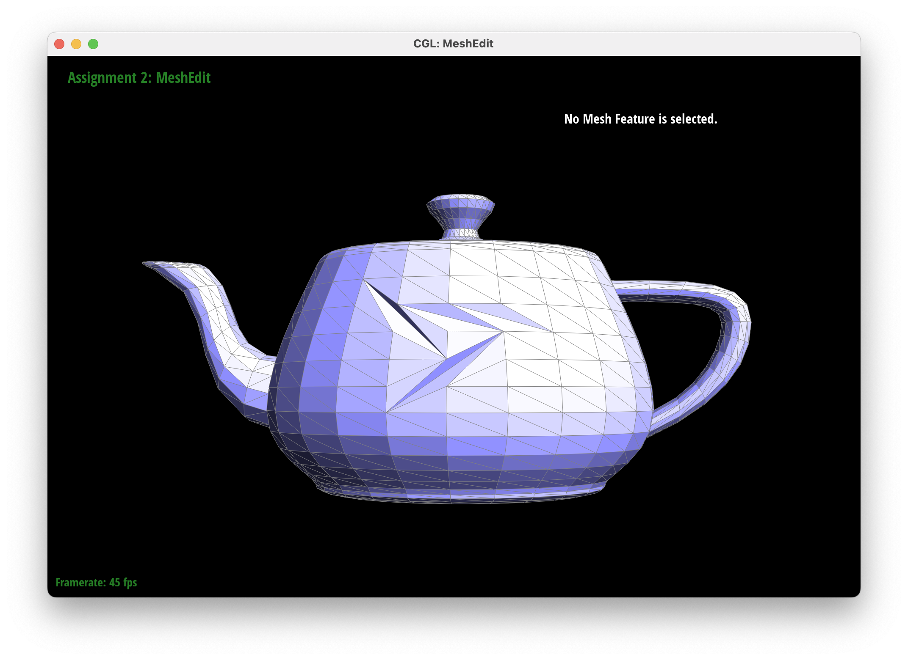
|
Part 5: Edge Split
Briefly explain how you implemented the edge split operation and describe any interesting implementation / debugging tricks you have used.Edge split requires new elements: the shared edge between two faces is divided into two new shorted edges. The spliting point is the new vertex. The new vertex connects to the other two vertices with two new edges. Finally, there are four faces now, meaning that there are two new faces.
I also wrote a complete note comparing the meshes before and after the split:
I implemented this part in a very similar method as the last part. I first retrieved all needed existing elements and named them. Then, I created necessary new elements and assigned corresponding elements to all halfedges, edges, vertices, and faces. To make good use of existing elements, I assigned the original faces to the top two faces, the original shared edge as the top half part of the shared edge (along with the corresponding two halfedges), and the original four vertices and four edges unchanged.
I did additional preparation for the next part here. For the new vertex on the shared edge, I set isNew as true to show that this vertex is new. For the three edges (the original edge is the fourth one), I set the two edges connecting a new vertex and an onld vertex as isNew = false. The two edges which lie on the original shared edge have isNew = true because they are being split instead of being actually created.
In total, the recorded elements are: five vertices: v1, v2, v3, v4, v; eight edges: e0 (the original shared edge), e3, e4, e5, e6, e79 (means that this is the edge with halfedges no. 7 and no. 9), e810, e1112; sixteen halfedges: h3, h4, h5, h6 are the ones that remain unchanged; h3t, h4t, h5t, h6t are twins of h3, h4, h5, h6; h1, h2 are the original halfedges of the shared edge; and h7, h8, h9, h10, h11, h12 are new halfedges; four faces: f1, f2 are the original ones (and now the top two faces); f3, f4 are the new ones.
Show screenshots of a mesh before and after some edge splits.
|
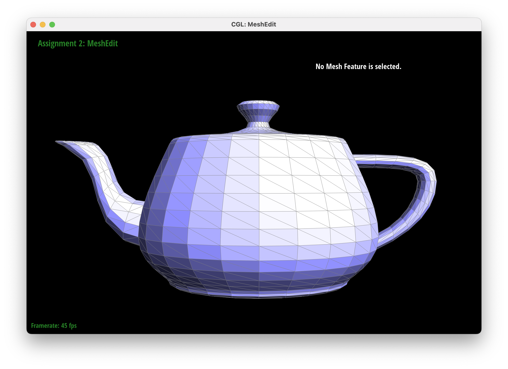
|

|
Show screenshots of a mesh before and after a combination of both edge splits and edge flips.

|
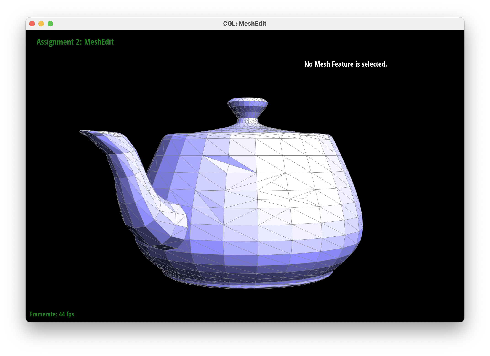
|
Part 6: Loop Subdivision for Mesh Upsampling
Briefly explain how you implemented the loop subdivision and describe any interesting implementation / debugging tricks you have used.By using loop subdivision, we can upsample the mesh first by spliting every single edges, and then flip those edges connecting a new vertex and an old vertex, and finally update the coordinates of vertices.
For this part, I followed the suggested steps:
1. I calculated and stored the new positions for existing vertices in vertices' newPosition. The reason why I do this first is because the neighboring vertices and their positions will change after spliting edges. The newPosition can be calculated by a weighted average of the vertex position itself and all neighboring vertices' positions. If there are three neighboring vertices, each neighboring vertex has a weight of 3/16. If there are more (n neighboring vertices), each neighboring vertex has a weight of 3/8n. All positions are iterated by starting with verticesBegin and iterate one by one. For each vertex's neighboring vertices, I iterated them by starting from the vertex in the middle, going to its linked halfedge, going to its twin, and then record the position of its linked vertex position.
2. I also calculated and stored the new positions for new vertices in corresponding edges' newPosition. By storing the position in edges, I can then update positions right after spliting edges. This kind of positions are calculated by retrieving the four neighboring vertices' original positions of the edge and then calculate a weighted average of them. All positions are iterated by starting with edgeBegin and iterate one by one. I also set the isNew of edges to be false to make sure that all existing edges are "non-new" ones so that I can utilize spliting edges to set newly generated edges (instead of splited ones) to be "new" ones.
3. I splited every single edges and updated new vertices' positions. Since new edges are generating, I couldn't use a for loop and just iterate through all edges. Instead, I use a while loop to make sure every applicable edges are iterated. Since only those existing edges with both two vertices being old should be splited, I used boolean expressions to check before spliting, and updated the new vertex positions right after spliting.
4. I flipped all edges that were connecting a new vertex and an old vertex. This step has a similar implementation as the last one: instead of using a for loop and iterate one by one, I used a while loop to make sure not to skip anyone. Because only certain edges will be flipped, I also utilized boolean expressions and checked whether the two vertices of an edge had different isNew values. If they did, I flipped the edge.
5. Finally, I updated all original vertices' positions by retrieving them from newPosition.
Take some notes, as well as some screenshots, of your observations on how meshes behave after loop subdivision. What happens to sharp corners and edges? Can you reduce this effect by pre-splitting some edges?
Now we can observe the change of this polyhedron while upsampling:
|
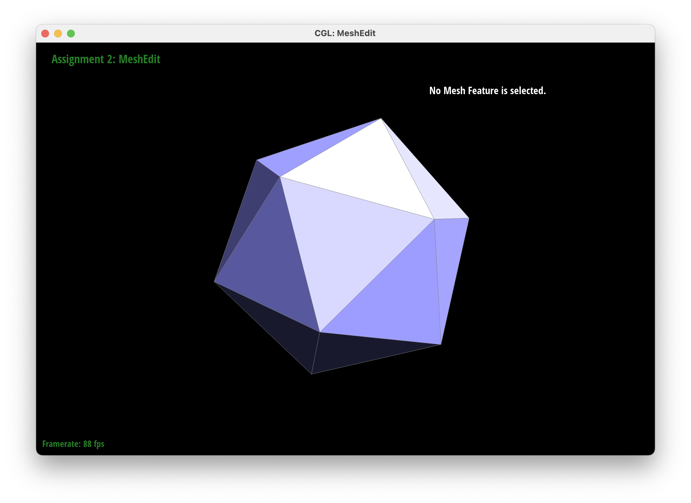
|

|
|
|
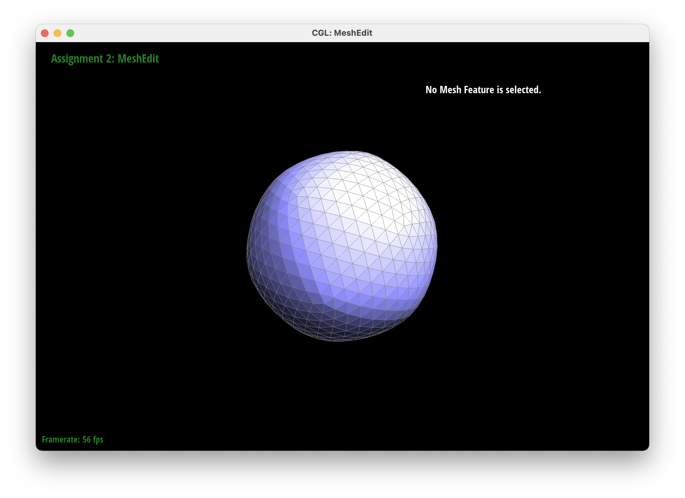
|
We can notice that with more steps of upsampling, the polyhedron loses its edgy characristic and seems more round. After the third step, the polyhedron looks even like a sphere with barely any characteristic of the original polyhedron.
There is the effect that edges and sharp vertices are smoothen. This is because the vertices are being averaged and updated every time there is an upsampling. If we pre-split some of the edges and flip new edges so that they already form a certain pattern before upsampling, we can manage to keep some of the characteristics of the original mesh.
|
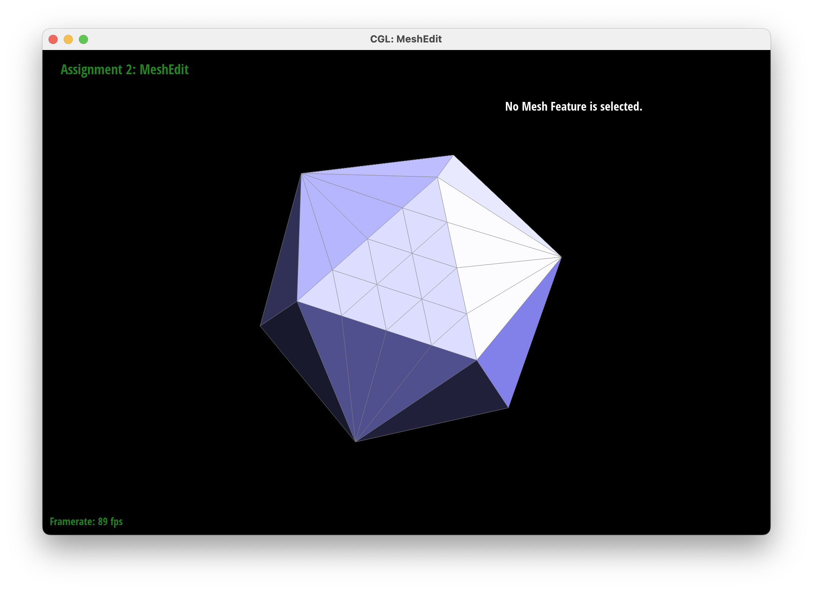
|
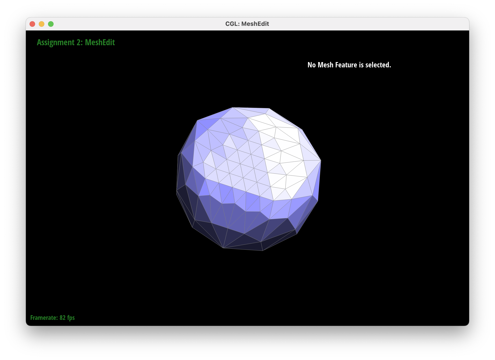
|
|
|

|
We can notice that the face and edges that are pre-splited retain their original shapes somehow. This means that the smoothen effect can be reduced by pre-splitting edges.
Load dae/cube.dae. Perform several iterations of loop subdivision on the cube. Notice that the cube becomes slightly asymmetric after repeated subdivisions. Can you pre-process the cube with edge flips and splits so that the cube subdivides symmetrically? Document these effects and explain why they occur. Also explain how your pre-processing helps alleviate the effects.We first load the cube file and observe how it becomes assymetric after upsampling:
|
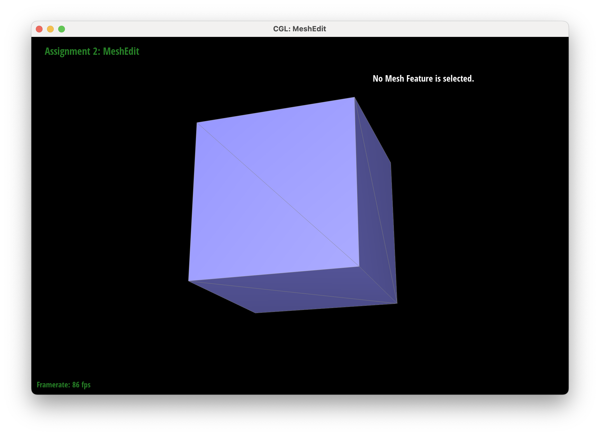
|
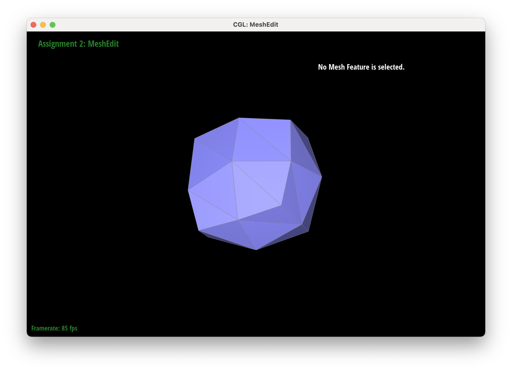
|
|
|
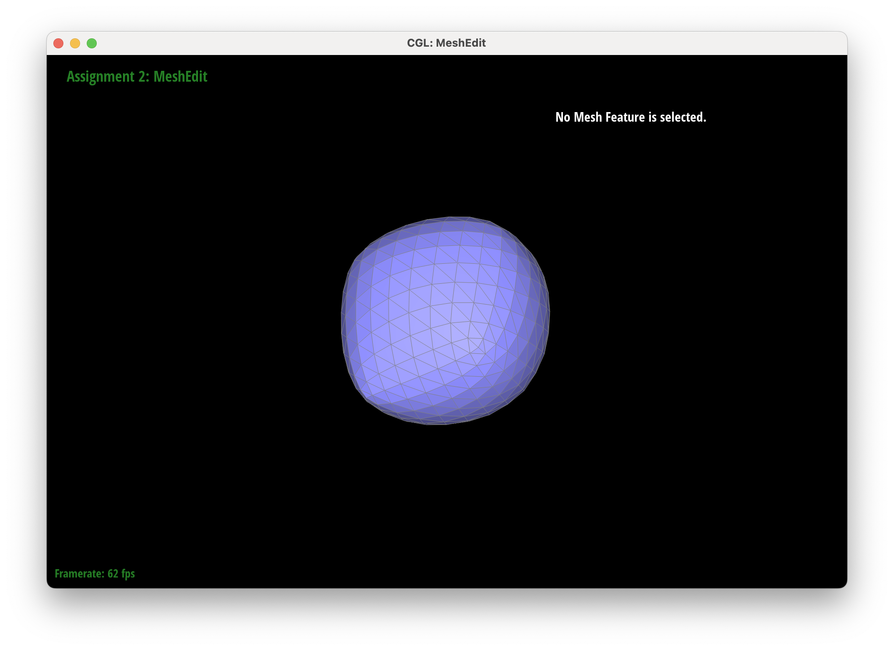
|
The cube became assymetrix because the edges are not well distributed for the whole surface of the cube. New edges are also generated not well distributed because this, and it finally leads to assymetricly distributed triangle meshes and assymetric polyhedron.
If we pre-split all edges and make them symmetric throughout the whole cube surface, we can upsample the cube and keep it symmetric:
|
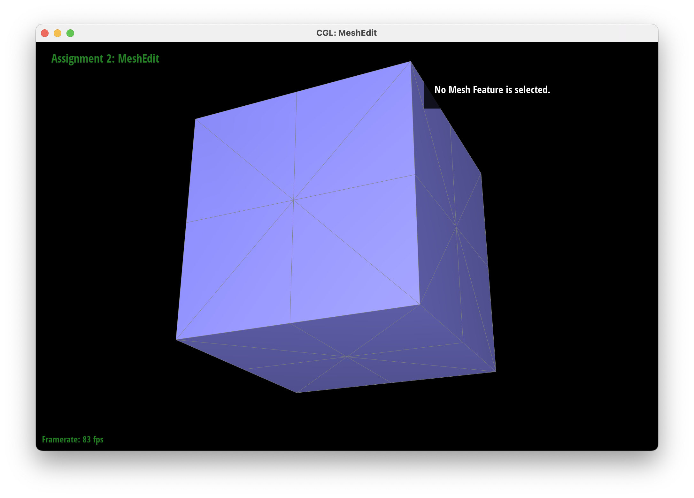
|
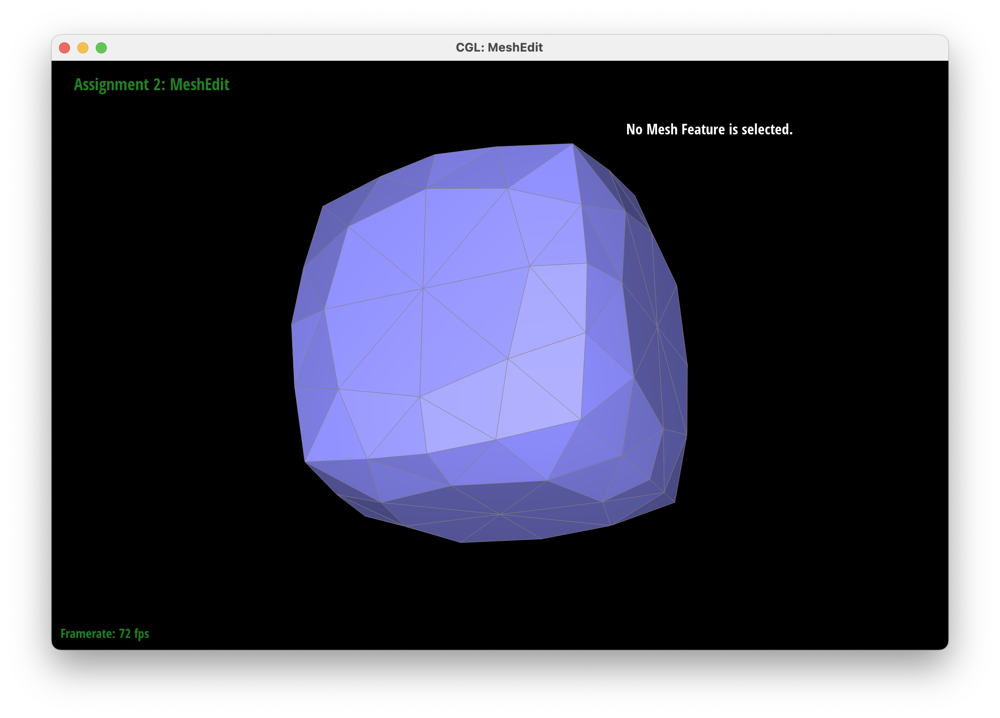
|
|
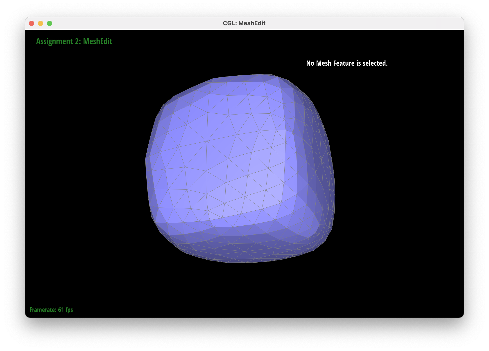
|
|
This pre-processing method distributes edges and faces symmetrically of the polyhedron at first, thus making the upsampled polyhedron symmetric, too.